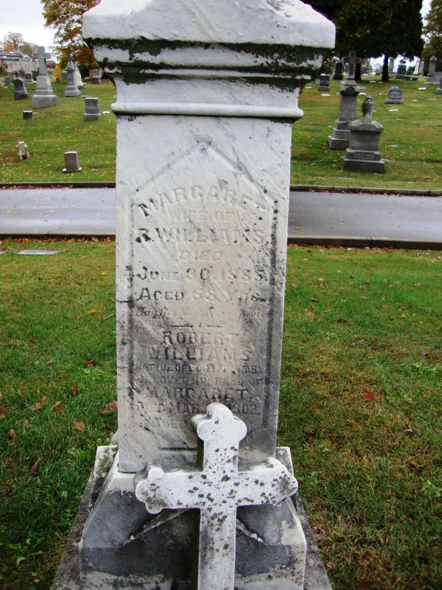

Margaret Fogerty
about 1825 – 30 June 1885
Fogerty line · County Tipperary, Ireland; Cincinnati, Ohio
Profile status: SUPPORTED
Quick Facts
Born
about 1825, County Tipperary, Ireland UNPROVED (the year is an estimate only — four records give four ages at her death: 53 (cemetery), 55 (University of Cincinnati death card), 57–58 (Find a Grave, born 1827), 60 (couple’s document header, born about 1825). The county comes from her Hamilton County death record — SUPPORTED — but no parish or parent name has been found)
Died
30 June 1885, Cincinnati SUPPORTED (University of Cincinnati death card: age 55, 108 Butler Street, cause “Chr. Hepatitis”, Dr. D. D. Bramble; Find a Grave agrees on the date; the cemetery database enters interment 2 July 1885, age 53)
Married
Robert Williams, 22 January 1856, St. Francis Xavier, Cincinnati
DOCUMENTED (register image read; witnesses Francis van Don Borg × Johanna O’Conor; officiant J. Aemal, S.J.; banns dispensed; the register names no parents, origins, or ages)
Occupation
No occupation is recorded in the research folder
Military
No military service is recorded in the research folder
Buried
St. Joseph New Cemetery, Section 3, Lot 16, Part N, Range 2 SUPPORTED (interred 2 July 1885, the family plot)
Religion
Roman Catholic SUPPORTED (parish context — the St. Francis Xavier marriage and the children’s Catholic baptisms; no register entry for Margaret herself has been read)
Immediate Family
Parents
Unknown
UNPROVEDNo candidate couple clears the bar. The Tipperary parish registers hold 755 Margaret Fogarty baptisms for 1820–1832 alone, and about 46 dated candidates for 1819–1828 — including a Thurles baptism, 1 June 1825, to John Fogarty × Margaret Dee, image-read but unproved as ours. No parish or parent name singles one out; the search is parked until one emerges.
Spouse
Robert Williams (born about 1820), married 22 January 1856
DOCUMENTEDThe marriage register spells her maiden name Fogerty and names no parents for either party.
Children
Kate / Catherine Williams (born about 1856–1857)
SUPPORTEDRobert Williams Jr. (born about 1858; interred 11 January 1902, age 43, same plot, parents named Robert & Margaret)
SUPPORTEDJohn W. Williams (born July 1860, Cincinnati; married Mary Collins, née Murnahan; children Robert Emmett, Margaret, Lenora, John Thomas — the direct line — and Edward)
SUPPORTEDJohanna Williams (born 21 June 1862; baptized 27 June 1862, St. Francis Xavier; sponsors William M’Craith × Johanna Kennedy)
DOCUMENTEDMargaret V. Williams (born 28 July 1864; died 2 December 1923, Dayton; married Daniel Raymond Johnson 20 January 1886)
SUPPORTEDPatrick Williams (born 1866 — FamilySearch gives 1868; printer, 108 Butler Street, 1885–86)
SUPPORTEDMichael Williams (born 1869, index only)
UNPROVEDAlice Williams (born 1872 — FamilySearch gives 1873; index only)
UNPROVEDCatharina Williams (born 1872, index only)
UNPROVEDJohn Williams (younger) (born 6 July 1876; died 8 July 1936; death certificate File No. 44804 names parents Robert × Margaret)
DOCUMENTEDTen children are named in the material held. FamilySearch lists eight (no Michael, no Catharina); Geni lists seven (no Kate, no younger John, no Michael; Alice and Catherine as separate children). Alice and Catharina, both 1872, stay open — twins, or one child under two name forms? The 1880 census lists Alice, 8, and no Catharina; do not merge without a record.
On Family Tree Sites
Life Timeline
about 1825 · age 0
Born, County Tipperary, Ireland UNPROVED (year estimated; four-way age spread; county from her death record)
mid-1850s · age about 30
Reached Cincinnati SUPPORTED (the household’s arrival window; no ship or port found)
22 January 1856 · age about 31
Married Robert Williams, St. Francis Xavier DOCUMENTED
1856–1876 · ages about 31–51
Ten children born SUPPORTED
30 June 1885 · age about 60
Died, Cincinnati SUPPORTED (cause “Chr. Hepatitis”; interred 2 July)
Buried
St. Joseph New Cemetery, Section 3, Lot 16, Part N, Range 2 SUPPORTED
Life Story
Margaret Fogerty was born about 1825 in County Tipperary, Ireland — the county comes from her Hamilton County death record, but the year is an estimate only: four records give four ages at her death, 53, 55, 57–58, and 60, and no baptism has been tied to her. The Tipperary registers hold 755 Margaret Fogarty baptisms for 1820–1832 alone, and about 46 dated candidates for 1819–1828, including a Thurles baptism of 1 June 1825 to John Fogarty and Margaret Dee — image-read, but nothing ties that girl to Cincinnati. She reached Cincinnati in the mid-1850s and married Robert Williams on 22 January 1856 at St. Francis Xavier; the register entry, read directly, spells her maiden name Fogerty and names no parents for either party. No portrait of Margaret has been found; the shared headstone she shares with Robert is shown above.
They lived in the West End Irish district — Butler Street, 174, 118, and 108 across the years — and raised ten children there. Margaret’s children were baptized in the city’s Catholic parishes: Johanna at St. Francis Xavier in 1862, with sponsors William M’Craith and Johanna Kennedy; John W. at St. Peter in Chains Cathedral in 1860; the younger children in the St. Francis Xavier books. She was Roman Catholic, and the household’s parish life is the steadiest thread in her record. Two period-typical images of an 1850s Irish emigrant crossing are filed in the research folder — Henry Edward Doyle’s “Emigrants Leave Ireland” (1868) and James Glen Wilson’s “Emigrant Ship Leaving Belfast” — period-typical scenes for a 1850s crossing, not Robert and Margaret’s ship; their ship is unknown.
Margaret died on 30 June 1885, at 108 Butler Street, of chronic hepatitis, and was buried on 2 July in the family plot at St. Joseph New Cemetery, Section 3, Lot 16. Robert lived on another seventeen years and was interred beside her in 1902. Her parents are unknown: no candidate couple clears the bar, and the search is parked until a parish or a parent name emerges.
Sources and Evidence
- St. Francis Xavier Marriages 1855–1858, image 00005: Robert Williams × Margaret Fogerty, 22 January 1856 DOCUMENTED (register image read 21 October 2026; witnesses Francis van Don Borg × Johanna O’Conor; officiant J. Aemal, S.J.; banns dispensed; no parents, origins, or ages named; image banked in the research folder)
- University of Cincinnati Birth & Death Records, Margaret Williams death card, 30 June 1885 SUPPORTED (drc.libraries.uc.edu/items/49b37b4a-febd-435c-a57b-d7b4d9672c7c, File 18850630d_22.JPG; age 55; 108 Butler Street; “Chr. Hepatitis”; Dr. D. D. Bramble; Sullivan; St. Joseph’s New; Ireland only, no Tipperary on this card)
- Hamilton County death record, index only: born Tipperary, Ireland SUPPORTED (the county is SUPPORTED, not DOCUMENTED — index only)
- St. Joseph New Cemetery database, Margaret Williams: interment 2 July 1885, age 53, Section 3, Lot 16, Part N, Range 2, parents “UNKNOWN” SUPPORTED
- Find a Grave memorial 129223433, read live 6 November 2026: “Margaret Fogarty Williams,” born 1827 Ireland, died 30 June 1885, aged 57–58, St. Joseph New Cemetery, Photos 2 SUPPORTED (Find a Grave Index ark:/61903/1:1:QVG1-GRVH, photograph included; the shared pillar headstone is shown above — its south face gives Margaret “Aged 58 Yrs”. The second memorial photograph, a black-and-white view with a typed transcription of the south face, is filed in the research folder)
- St. Francis Xavier Baptisms 1861–1862, image 00047: Johanna Williams, born 21 June 1862, baptized 27 June 1862, daughter of Robert Williams × Margaretta; sponsors William M’Craith × Johanna Kennedy; officiant P. J. De Meester, S.J. DOCUMENTED (register image read; image banked in the research folder)
- Ohio death certificate, John Williams (younger), File No. 44804: born 6 July 1876, died 8 July 1936, Cincinnati; father Robert Williams, mother Margaret; wife Mary Collins Williams; informant Margaret Williams; burial St. Joseph New, 11 July 1936 DOCUMENTED (certificate image read 6 November 2026; ark:/61903/3:1:33S7-9PKP-3R2S, image 1566 of 3,261)
- Geni profile, read live 6 November 2026: Margaret Williams (Fogerty), born circa 1825 Ireland (no Tipperary); died 30 June 1885; Sources 0; seven children attached SUPPORTED
- FamilySearch GMSQ-T5G, read live 6 November 2026: name Margaret Fogarty (not Fogerty); birth 1825 Ireland (5 sources); death 1885 (0 sources); Sources 9; parents none; possible duplicate Margaret Fogerty 9SMG-59K — a bare stub, unconfirmed SUPPORTED
- Ancestry, Brewster Family Tree (tree 212654536), person 162810164150, read live 6 November 2026: birth about 1825 Ireland; death Unknown; Hints 13; no maiden name, no parents, no sources; only child attached is John W. Williams SUPPORTED
- United States censuses 1860, 1870, 1880, Cincinnati DOCUMENTED (1860, 14th Ward, dwelling/family 1177, image read; 1870, Ward 1, household 1941, ark:/61903/1:1:M62C-MJ2; 1880, ED 125, sheet 465D, ark:/61903/1:1:M8MR-M96; ages drift ±5 years across the records)
- Tricia’s Ancestry tree (“Tricia’s Shamblen/McKinney Family Tree”, tree 44342901), searched signed in 6 November 2026: the couple is NOT in the tree SUPPORTED (nothing to harvest)
Grades: DOCUMENTED an original record says it · SUPPORTED several records point to it · FAMILY ACCOUNT the family’s own telling · UNPROVED a lead, not proved.
Research Notes and Open Questions
- Grades on this page: DOCUMENTED means an original record was read; SUPPORTED means a claim attested by filed research — the census households, the directory runs, the cemetery database, the signed-in tree checks — but not by a register read here; UNPROVED means a claim carried from the research folder with no corroboration found.
- Parentage: Margaret’s parents are unknown — no candidate couple clears the bar. The Tipperary parish registers hold 755 Margaret Fogarty baptisms for 1820–1832 alone, and about 46 dated candidates for 1819–1828 — including a Thurles baptism, 1 June 1825, to John Fogarty × Margaret Dee, image-read but unproved as ours. No parish or parent name singles one out; the search is parked until one emerges.
- Birth year: about 1825 is an estimate — four records give four ages at her death: 53 (cemetery), 55 (University of Cincinnati death card), 57–58 (Find a Grave, born 1827), 60 (couple’s document header, born about 1825). No age is adopted as settled. The county, Tipperary, comes from her Hamilton County death record — SUPPORTED — and the death card itself says Ireland only.
- Marriage date: the register image gives 22 January 1856, DOCUMENTED. FamilySearch and Ancestry give 28 January 1856 — the register image governs; the 28 January date is not adopted.
- Spelling: Fogerty on the register, the couple’s document, and Geni; Fogarty on FamilySearch and Find a Grave. The register solved the maiden name as Fogerty.
- Death: 30 June 1885 is SUPPORTED-strong (University of Cincinnati death card and Find a Grave agree on the date); interment 2 July 1885, age 53 in the cemetery database. Cause: “Chr. Hepatitis,” Dr. D. D. Bramble; address 108 Butler Street.
- Robert’s Tipperary is not hers: Robert’s Tipperary is carved on his headstone (“NATIVE OF CO. TIPPERARY”); Margaret’s Tipperary comes from her own county death record. Each has its own source. Do not swap them.
- John W.’s baptism: carried from the Hamilton County index entry (name and year) only — SUPPORTED. The full Herbert & Ross entry is an open pull, readable free at Cincinnati Public Library branches. The folder’s earlier “register read, p. 12 no. 253” is not carried as a read register entry. The folder carries John W.’s birth as 3 July 1860; his live page carries July 1860 — the day is unproved.
- Children: the roster is reconciled across three lists — FamilySearch lists eight (no Michael, no Catharina); Geni lists seven (no Kate, no younger John, no Michael; Alice and Catherine as separate children); the folder names ten. Alice and Catharina, both 1872, stay open — twins, or one child under two name forms? FamilySearch gives Patrick 1868 and Alice 1873 against the folder’s about 1866 and about 1872 — the years conflict and are carried as approximate.
- Younger John: his death certificate image was read 6 November 2026 (File No. 44804) — parents Robert × Margaret, wife Mary Collins Williams, informant Margaret Williams, 1233 Elsinore Street, drayman, Rubber Tire Co., burial St. Joseph New 11 July 1936. FamilySearch lists no spouse or children for him, and he is NOT on Geni as a child of Robert × Margaret; his marriage record was not searched. Two brothers each married a Mary Collins — do not merge the two women.
- John W.’s marriages: Nellie E. Laird, 6 February 1884 (Hamilton County, v 89 p 489) — the record is verified, but the groom’s identity as Robert’s son is OPEN; the register says T., the newspaper extract says E.; her death in 1884–86 has not been found, and no Nellie spouse appears on FamilySearch. Mary Collins, 29 July 1886 — the record is UNSOURCED: no indexed record in either FamilySearch Ohio marriage collection. Mary Collins, née Murnahan, widow of William Green, per the couple’s document; John W. died between 1921 and January 1923.
- The 1852 Robert × Mary Corcoran marriage (St. Patrick): UNPROVED lead — a possible first marriage if ours. The decider is the St. Patrick register entry (Findmypast, paywalled) or a Mary Williams death in 1852–55. “Robert Williams” is Cincinnati’s commonest name; the other Hamilton County Roberts (1865 Lizzie Jones, 1866 Ann Parker, 1868 Catharine Williams, 1877 Jessie Montgomery) are different men.
- Tree checks, signed in 6 November 2026: Geni (0 sources; seven children); FamilySearch (GMSQ-T5G; possible duplicate 9SMG-59K unconfirmed); Ancestry (162810164150; Hints 13; no sources); WikiTree — no profile, a genuine negative, no tile; Find a Grave (memorial 129223433; Photos 2, unverified); Findmypast — Margaret alone in 3 trees, details paywalled, blocked not a negative, no tile; Tricia’s Ancestry tree — absent.
- Find a Grave: Robert Jr. has no memorial (genuine negative). The Holy Cross burial candidate (“Robt Williams,” born 1817, buried 1902, transcript US/CINC/CATH/PR/BUR/P2/0011986) is paywalled and unproven as our Robert — its parish is Holy Cross, while our Robert is buried at St. Joseph New.
- Ship images: two period-typical images are filed in the research folder — Doyle’s “Emigrants Leave Ireland” (1868) and Wilson’s “Emigrant Ship Leaving Belfast” — neither is Robert and Margaret’s ship; their ship is unknown. The verbatim disclaimers: “Period-typical vessel for a 1850s Liverpool–New York crossing — NOT Robert Williams’s ship; his ship is unknown.” and “Period-typical scene for a 1850s Irish emigrant crossing — NOT Margaret Williams’s ship; her ship is unknown.” Neither image is placed on this page. The two place photos (Betts–Longworth Chestnut Street; St. Joseph New entrance) stay out.
- No lore: no family lore exists for this couple (10-02 lore sweep). The chapter draft “The Ones Who Crossed” is STALE — it predates the 21 October findings (says no marriage record found; Robert “likely died 1881–1883”) and was not used as a fact source.
- Paid items (notes only, never purchased): Archdiocese of Cincinnati research request, about $25 — PARKED by the free-only ruling; the draft is redundant now (it hunts marriage detail already held) and names the wrong parish for John’s baptism. The Herbert & Ross indexes are readable free at Cincinnati Public Library branches.
- Military: no service found for Robert; the 1863–65 draft lists are unsearched; the 1868–69 directory gap (no Robert Williams anywhere) leaves canvasser miss, outside the city, or war service open.
- The old 1936 death date for John W. belongs to the younger John — the two brothers were conflated and are now separated.
- McGregor settled: the McGregor marriage was daughter Margaret’s, not the widowed mother’s.